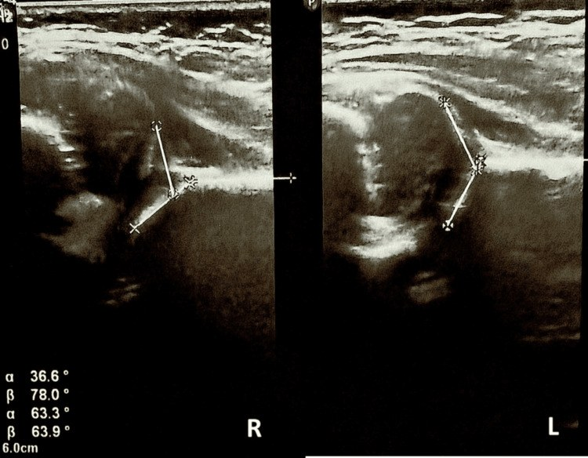

640 — Háng nhi: DDH Graf, Perthes, SCFE & NAT / Peds hip & abuse
Tags: pattern:khop-hang-nhi pattern:gay-xuong-nhi vung:co-xuong-khop-nhi score:Graf score:Salter-Harris
Mức chắc chắn (certainty): tổng hợp y văn (literature synthesis) — nhóm tự biên từ y văn mở, chưa gắn ca nguyên văn đơn lẻ.
1. Tổng quan — tuổi nào bệnh nấy + gãy nào báo động nấy
- DDH (< 6 tháng, sụn chưa cốt hóa): siêu âm Graf — TẠI SAO α ≥ 60° là chuẩn: mái xương che ≥ 50% chỏm; α < 60° = mái dốc, chỏm trật dần.
- Perthes (4–8 tuổi): thiếu máu chỏm tự phát → đặc → vỡ → tái tạo — TẠI SAO chỏm nhỏ + đặc + vỡ: xương chết đặc lại rồi gãy vụn trước khi mạch mới vào.
- SCFE (10–15 tuổi béo phì): sụn tiếp hợp trượt — TẠI SAO Klein không cắt chỏm + đau gối quy chiếu: chỏm trượt sau-xuống, đau lan theo dây bịt.
- NAT (< 2 tuổi): CML (góc/quai xô) + sườn sau + nhiều lứa tuổi — TẠI SAO: giật lắc tay chân + bóp ngực là cơ chế duy nhất tạo các gãy này.
2. Gamut khập khiễng/gãy nhi (Gamut)
- < 6 tháng + α < 60° + Ortolani (+): DDH — Pavlik (theo dõi trật bịt + hoại tử!).
- 4–8 tuổi + chỏm đặc/vỡ + khập khiễng không sốt: Perthes — chứa chỏm + theo dõi (khác viêm nhiễm sốt!).
- Béo phì + Klein (+) + đau gối: SCFE — vít cố định cấp cứu (trượt tiếp hoại tử!).
- CML + sườn sau + nhiều tuổi xương: NAT — báo cáo + skeletal survey + nhãn khoa.
3. Bảng so sánh phân biệt (ma trận đối chiếu)
| Thực thể (entity) | Hình ảnh điển hình | Chốt vào (rule-in) | Chốt loại (rule-out) | Gợi ý xác nhận |
|---|---|---|---|---|
| DDH | Graf α < 60° + β > 55° + che < 50% | α 36° + β 78° = Type IV | α ≥ 60° → bình thường | Pavlik + siêu âm (coi chừng trật bịt!) |
| Perthes | Chỏm nhỏ + đặc + vỡ + 4–8 tuổi | Không sốt + vỡ chỏm | Sốt + CRP → viêm nhiễm | Chứa chỏm + Herring |
| SCFE | Klein không cắt chỏm + béo phì + đau gối | Trethowan (+) + frog-leg | Háng thường + tuổi nhỏ → DDH | Vít ngay (cả 2 bên khi nguy cơ!) |
| NAT | CML + sườn sau + nhiều lứa tuổi | Góc/quai + sườn sau = báo cáo | Đơn gãy + tai nạn rõ → thường | Survey + mắt + bảo vệ trẻ |

Phải Type IV + Pavlik → trật bịt + hoại tử coxa plana (biến chứng Tg!). Nguồn: Bogojevska Doksevska et al., Cureus 2026 Fig. 2, CC BY 4.0.4. Protocol háng nhi
- Siêu âm Graf < 6 tháng + XR AP/frog-leg + skeletal survey khi nghi NAT; Pavlik + siêu âm hàng tuần (phát hiện trật bịt sớm!).
flowchart TD
A[Khập khiễng/gãy nhi] --> B{Tuổi?}
B -->|<6 tháng| C[Graf: α<60 = DDH]
B -->|4-8 tuổi| D[Perthes vs viêm]
B -->|10-15 + béo| E[Klein: SCFE vít]
B -->|Gãy lạ| F[NAT: survey + báo cáo]
5. Cạm bẫy
- Pavlik quá gấp gây trật bịt + hoại tử (ca trên!) — siêu âm hàng tuần + Shenton line.
- SCFE đau gối bỏ sót háng — béo phì + đau gối là chụp háng frog-leg.
- Perthes kháng sinh mù tưởng viêm — không sốt + vỡ chỏm là Perthes (viêm là sốt + dịch + CRP!).
6. Tự lượng giá — Blind Quiz
Ca 1 — Bé gái 2 tháng sàng lọc DDH. Đọc siêu âm Graf.
- Hỏi: α/β bao nhiêu? Graf mấy? Pavlik có biến chứng gì phải theo dõi?
Bấm để hiện đáp án
- Dấu hiệu (findings): phải α 36,6° + β 78° (Type IV), trái bình thường.
- Chẩn đoán (diagnosis): DDH Graf IV — Pavlik + siêu âm hàng tuần (biến chứng: trật bịt + hoại tử chỏm coxa plana như ca này!).
- Nguồn: Bogojevska Doksevska et al., Fig. 2, CC BY 4.0.
Ca 2 — Bé trai 12 tuổi béo phì đau gối 1 tháng, háng hơi đau: gối hay háng? Phim nào? (Bảng mục 3.)
Bấm để hiện đáp án
- SCFE: chụp háng AP + frog-leg + Klein (đau gối quy chiếu!) — vít ngay.
Bài liên quan chéo
- 600 – Tổng quan Nhi
- 321 – Gãy trẻ em (Salter-Harris)
- 361 – Háng người lớn (AVN/FAI)
Không dùng để chẩn đoán độc lập khi chưa có người hướng dẫn.